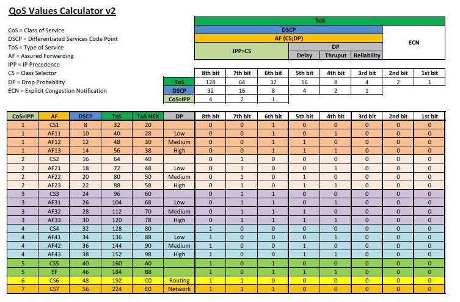

Quality of Service är användbart om en länk eller interface går fullt och viss trafik är viktigare än annan. Man kan klassificera och markera paket som man vill att intermediate systems ska prioritera och skicka iväg i första hand. IP/ATM/Frame Relay-headers har fält som kan användas för detta, t.ex. IP DSCP (RFC 3260). QoS är endast aktivt när det är överbelastat. QoS går att ha time based genom att matcha mot time based ACLer. Se även Cisco RSVP.
QoS Features
- Classification: Kolla packet headers och bestämma kö
- Drop policy: Regler för vad som ska droppas när det går fullt
- Scheduling: Logiken som bestämmer vad som ska skickas härnäst
- Number of queues: Unika klasser av paket för queueing tools
- Queue length: Maximala antalet paket i en enskild kö
MQC
Modular QoS CLI togs fram för att skapa en homogen syntax för QoS på IOS-enheter. Det förenar QoS features under ett gränsnitt och man kan konfigurera allt som har med classification, congestion management, traffic metering, marking och traffic shaping att göra. Man kan även använda en route-map för att sätta markeringar på paket men det är inte det rekommenderade sättet.
- Class Map – Definiera typer av trafik
- Policy Map – Definiera vad som ska göras med trafiken, t.ex. sätta QoS-markering eller shapea.
- Service Policy – Definiera interface och riktning
Class, man kan bl.a. matcha på ACLer/MAC-adresser/QoS-markeringar/protokoll. Det går att välja mellan AND-logik (match-all) eller OR-logik (match-any) om man behöver flera match-statements. Det går även att använda nested class-maps för mer avancerad logik.
class-map CLASS-MAP
match access-group namematch cos match mpls experimental
match not destination-address mac
show class-map
Policy
policy-map POLICY-MAP
class CLASS-MAP
set ip dscp <0-63>
show policy-map interface
Interface
interface Gi0/0
service-policy input POLICY-MAP
show policy-map interface brief
show run | i interface|service-policy
Om service-policy rejectas kan det bero på avsaknad av CEF på enheten.
Packet Marking

{kind=link}
class-map match-any ICMP
match protocol icmp
match protocol ping
Man kan också använda NBAR för att samla trafikdata om paketen som går över ett interface.
interface gi2
ip nbar protocol-discovery
show ip nbar protocol-discovery
Behöver man lägga in ett nytt protokoll får man ladda ner en PDLM-fil från Cisco och ladda upp till IOS-enheten och aktivera.
ip nbar pdlmname
Congestion Management
Köer som skapas på interface av queueing tools kallas software queues och håller det paket som inte kan skickas iväg på en gång. När sedan paketen kan skickas iväg flyttas de till en liten FIFO queue i hardware, denna kallas Tx ring (a special buffer control structure). När ett paket har lämnat Tx ring kan nästa encodas och skickas iväg utan software interupt till CPU, detta möjliggör full användning av interfacets bandbredd. Denna kö använder alltid FIFO-logik och kan inte påverkas av IOS queuing tools. Det är när tx ring går full som ett interface är överbelastat. Det som händer när man använder queuing tools är att hardware queue minskas lite för att ge mjukvaran mer utrymme att spela med eftersom mer trafik då hamnar i software queue.
show controllers
tx_ring är hardware queue, hold queue är software queue
interface gi2
tx-ring-limit
hold-queue 375 in
hold-queue 40 out
Catalyst 3850 Soft Buffers är assignade till en kö men kan delas med andra köer och interface om de inte används. Det totala antalet tillgängliga buffrar default är mindre än vad hårdvaran klarar av men detta kan ökas globalt i switchen.
qos queue-softmax-multiplier 1200
qos queue-stats-frame-count
Även "hold-queue out" är lite snålt ställt default på 3850.
Selective Packet Discard
SPD används när input queue är full och det innebär att mer minne tillåts ifall det är control plane packets som ska till CPU. Input queue kommer börja tömmas för ge utrymme ifall det kommer in ytterliggare control plane packets. SPD är på default både för IPv4 och IPv6.
show ip spd
CBWFQ
Tanken med Class-Based Weighted Fair Queueing är att använda samma scheduling logic som WFQ fast med konfigurerbara klasser som har extra låg weight vilket gör dem mer viktiga än den dynamiska omvandlingen. Det fungerar som WFQ fast man har mer flexibel flow classification med MQC syntax. Det är skapat från legacy-metoderna PQ och CQ. CBWFQ reserverar bandbredd för varje kö för att sedan använda WFQ för paket i default-kön. Default-kön finns alltid och behöver inte konfigureras, där hamnar paket som inte matchar någon class-map. Finns det tomma köer kan den bandbredden användas av andra klasser sålänge det inte går fullt. Summan av alla bandbreddsreservationer kan inte överstiga 75% av interfacets bandbredd pga max-reserved-bandwidth defaults. Det går ej att kombinera bandwidth och bandwidth percent kommandona i samma policy-map.
class-map match-all R2
match access-group name R2
policy-map CBWFQ
class R2
bandwidth percent 5
class class-default
interface Gi 0/1
bandwidth 1000
service-policy output CBWFQ
Verify
show policy-map interface
LLQ
Low Latency Queueing fungerar som CBWFQ men utökar det med priority queues även kallat low-latency queues. Det som behandlas först är paket i prio-köerna. LLQ förhindrar även starvation av övriga köer eftersom den prioriterade köns bandbredd förutom garanterad minimum också är policed max-bandbredd (vid congestion). Har man flera klasser som är prioriterade är det FIFO som gäller eftersom det endast finns en intern prio-kö. Fördelen med detta är att man kan styra så att man kan ha flera prioriterade klasser men ingen kan ta upp all bandbredd. Endast paket inom den konfigurerade bandbredden/procenten kommer att prioriteras men i övrigt får flödena använda all bandbredd, dvs LLQ används endast när hardware queues går fulla. Notera att LLQ policern tar hänsyn till L2 framesens längd.
class-map http
match protocol http
class-map voice
match protocol rtp
policy-map VOICE_PRIO
class http
bandwidth percent 20
class voice
priority percent 50
Verify
show policy-map interface
{kind=link}
Ethernet Subinterface
Subinterfaces har inget eget sätt att veta om det är fulla köer på huvudinterfacet därför tillåter inte Cisco IOS att policy-maps med queuing policies appliceras direkt på subinterfacen. Det man kan göra är att ha en policy på huvudinterfacet och matcha på vlan-taggningen för att kunna använda queuing policies på subinterfacen.
class-map match-any Server
match vlan 10
class-map match-any DMZ
match vlan 20
policy-map Vlans
class Server
bandwidth percent 20
class DMZ
police cir 10000000 bc 1875000
interface GigabitEthernet1
no ip address
service-policy output Vlans
Congestion Avoidance
När en kö är full har inte routern plats för paket utan de droppas vilket påverkar nätverksprestandan. TCP skickar så mycket som möjligt tills paket droppas och/eller delay (RTT) ökar och då sänks sending rate lite. När transmit buffer (egress) fylls helt blir det tail drops. Detta får påverkan på annan trafik som också blir droppad. Global synkronisering uppstår när flera TCP-hostar minskar sina överföringshastigheter som svar på packet drops för att sedan öka sin överföringshastigheter igen när trängseln minskar. För att förhindra trafikspikar som leder till att många paket droppas hjälper det att droppa några paket när en kö börjar bli full för att göra så att TCP-hostar sänker sending rate tidigare. Detta ökar overall throughput. Cisco har utvecklat Weighted Random Early Detection som håller koll på köerna och undviker global synchronization. För att avgöra när paket ska börja droppas används average queue depth som mäts mot minimum och maximum queue threshold och agerar sedan utifrån det. Ligger average queue depth under minimum droppas ingenting, ligger det mellan minimum och maximum droppas en stigande procent av paketen på random och ligger det över maximum droppas alla nya paket. Eftersom WRED tittar på köer måste det konfigureras ihop med en kö och alla kömekanismer har inte stöd för WRED.
Fysiskt interface (allt blir en FIFO på interfacet)
interface gi0/0
random-detect
show queueing random-detect
För att slå på WRED i class-default kan man antingen konfigurera en bandbreddsreservation för att göra om klassens kö till FIFO och sedan slå RED eller slå på RED med WFQ. Då aktiveras RED dropping istället för Congestive Discard Threshold-based drops.
ECN
TCP Explicit Congestion Notification är ett slags tillägg till WRED som kan användas för att signalera att trafikflödena ska sakta ner istället för att det faktiskt börjar droppas paket. Nätverket signalerar till TCP flow receiver att man är nära att börja droppa paket som då kan reagera på detta, t.ex. signalera till sender att sänka sending rate. Detta leder till bättre TCP-prestanda overall jämfört med drops som leder till TCP slow start och att paket måste skickas om. TCP ECN fungerar tillsammans med RED genom att byta exceed action från random drops till ECN marking. Denna marking använder de två least-significant bitarna av TOS-byten i IP-headern, se bilden ovan.
random-detect ecn
IOS använder inte ECN default, global inställning.
ip tcp ecn
Traffic Shaping
Det finns två sätt att begränsa mängden trafik som lämnar ett interface, policing och shaping. Traffic shaping förhindrar bit raten på de paket som lämnar ett interface från att överstiga konfigurerat värde. Shaping monitors håller koll på det som skickas och om det överskrider gränsvärde så hålls paketen kvar i en shaping queue och släpps iväg över tiden för att på så sätt ge en viss rate. Därför är shaping alltid outbound och det har potentialen att utnyttja bandbredden mer effektivt än policing för att det blir ett jämnare flöde på TCP-strömmarna. Routrar skickar bits enligt den fysiska kapaciteten/frekvensen på sina interface, för att kunna ha en lägre bandbredd måste routern medvetet växla mellan att skicka och att vara tyst. Ett sådant tidsinterval kallas Tc och mäts i millisekunder. Under Tc får det endast skickas en viss mängd bitar, denna mängd kallas commited burst (Bc). Har man varit tyst ett tag kan man bursta lite extra, denna bitmängd kallas Be (excess burst). I äldre IOS-versioner användas Generic Traffic Shaping (GTS), det är grundläggande och man kan styra vad som ska shapeas med ACL. Det rekommenderade sättet är dock att använda class-based shaping som finns i IOS 15. Då skapar man class-maps och policy-maps med MQC vilket ger mer granulär kontroll över shaping.
policy-map SHAPE
class CLASS
shape average 500000 #BW
interface Gi2
service-policy output SHAPE
Man kan välja att shapea average, adaptive eller peak.
Verify
show policy-map interface
show traffic-shape#Legacy
show traffic-shape queue
Policing
Class-Based Policing är en funktion som håller koll på bit raten på interface och om konfigurerat värde överskrids kan policing agera, t.ex. sätta en viss DSCP/Precedence-markering eller droppa paketen. Det fungerar både ingress och egress på interface och subinterface. Man kan konfigurera en enskild bit rate och paket kommer att kategoriseras som conforming eller exceeding, detta kallas Single-Rate Two-Color Policing. Vill man ha lite utrymme för burst får man sätta upp Single-Rate Three-Color Policing och då finns det även en violate-kategori som konfigureras som paket kan hamna i. Detta tillåter tillfälliga bursts och trafikmängden måste gå ner för att det ska kunna burstas igen. Vill man tillåta lite längre perioder med burst kan man använda Two-Rate Three-Color Policing, då konfigurerar man även en Peak Information Rate (PIR). Man kan även ta flera aktioner med paketen, t.ex. sätta flera olika markeringar, detta kallas multi-action policing.
ip access-list extended ACL-HTTP
permit tcp any any eq http
class-map HTTP
match ip access-list ACL-HTTP
policy-map POLICE
class HTTP
police 64000 12000 24000 conform-action transmit exceed-action drop
class class-default
police cir percent 25 bc 500 ms be 500 ms conform-action transmit exceed-action drop
int Gi1
service-policy input POLICE
Verify
show policy-map interface
Single-Rate Three-Color
policy-map POLICE
class HTTP
police cir 64000
conform-action set-prec-transmit 1
exceed-action set-prec-transmit 0
violate-action drop
Two-Rate Three-Color Detta är hierarkisk policing med three color.
policy-map POLICE
class HTTP
police cir 64000
service-policy SUBRATE_POLICER
policy-map SUBRATE_POLICER
class SITE1
police cir 32000
conform-action set-prec-transmit 1
exceed-action set-prec-transmit 0
violate-action drop
class SITE2
police cir 32000
conform-action set-prec-transmit 1
exceed-action set-prec-transmit 0
violate-action drop
CAR Committed Access Rate är ett äldre alternativ till CB-Policing som inte använder MQC-syntax. Det tillåter burst men endast Single-Rate Two-Color.
Layer 2 QoS
L2 QoS kan skilja sig mycket mellan switchmodeller eftersom hur QoS fungerar beror på switch-arkitekturen och hårdvaran. QoS baseras på intern DSCP som tas ut baserat på den trust configuration som finns. Trust betyder vilka fält som kollas för att få fram internal DSCP för varje paket. Default är L2 QoS inte påslaget men om man enablear det globalt så kommer internal DSCP tas från interfacets default CoS som är 0 och därmed ta bort eventuell marking. Väljer man att lita på CoS så kollas L2-headern i ISL eller det 802.1Q-taggade paketet. Litar man på DSCP eller IP precedence tas QoS-nivån ifrån L3 headern. Att lita på CoS är endast giltigt på trunk-länkar och DSCP/precedence fungerar endast på IP-paket.
{kind=link}
Global
mls qos
mls qos monitor packets
ip precedence to dscp mapping
no mls qos rewrite ip dscp
Verify
show mls qos interface g0/3 statistics
Switch Database Management, används för att dela upp TCAM.
show sdm prefer
Catalyst 3560
En Catalyst 3560 switch har köer både för input och output. Det finns två köer för input och scheduler använder Shared Round-Robin (SRR) för att skicka paketen till internal switch fabric. För att bestämma discard thresholds för varje kö används Weighted Tail Drop (WTD) när QoS slås på. Weight för respektive kö är konfigurerbart med relativa värden, dvs ratio. Default när man slår på QoS hamnar paket med COS 5 i kö 2 och övrig trafik i kö 1. Kö 2 har även 10% bandbredd reserverat. När man ska prioritera trafik konfigurerar man den ena kön för det. Ingress QoS konfigureras globalt så det gäller alla interface.
mls qos srr-queue input priority-queue 2 bandwidth 30
Kö 2 kommer att få 30% av bandbredden och resterande delas mellan köerna.
show mls qos input-queue
Man kan dela på resterande bandbredd med en ratio, default är 4:4.
srr-queue input bandwidth 4 4
Man kan mappa annan trafik till kö 2, t.ex. COS 6.
mls qos srr-queue input cos-map queue 2 6
Verify
show mls qos maps cos-input-q
Egress Cisco 3560 har fyra köer för egress per interface och man kan mappa COS/DCSP, använda weight och sätta drop thresholds per kö. SRR används för att undvika queue starvation om man har en prio-kö. Egress QoS konfigureras per interface med undantag buffers och WTD som görs globalt. Det finns Sharing och Shaping, båda fungerar lika bra när det finns paket i alla köer och servar eventuell prio-kö direkt när Tx är ledigt. Men Shaping sätter rate-limit på köerna så att de inte överstiger tilldelad bandbredd.
Per interface, ratio mellan fyra köer
interface Gi2
queue-set 1
srr-queue bandwidth share <1> <2> <3> <4>
srr-queue bandwidth shape <1> <2> <3> <4>
priority-queue out
Buffer och WTD
mls qos queue-set output 1 buffers <1> <2> <3> <4>
mls qos queue-set output 1 threshold 2 <1> <2> <3> <4>
Verify
show mls qos interface Gi2 queueing
MPLS
När man gör label imposition är default beteende att kopiera IP Precedence till MPLS EXP på alla labels som impose:as. Se även Cisco MPLS.
Pipe mode
I detta mode rör inte SP kundens paketmärkningar utan policy genom nätverket baseras enbart på SP-märkning. Policy enforceas på ingress PE som sätter EXP. Även policy på edge mot kund baseras på EXP-bitar men kunds märkningar är intakta. Kunden får veta hur paket ska märkas för att hamna i de olika klasser/köer som SP erbjuder.
Ingress PE
class-map match-all PREC6
match ip precedence 6
!
policy-map from-ce
class PREC6
set mpls experimental imposition 3
!
int gi2
service-policy input from-ce
Egress PE
mpls ldp explicit-null
!
class-map match-all EXP3
match mpls experimental topmost 3
!
policy-map from-core
class EXP3
set qos-group 3
!
int gi1
service-policy input from-core
!
class-map match-all GROUP3
match qos-group 3
!
policy-map to-ce
class GROUP3
bandwidth percent 15
!
int gi2
service-policy output to-ce
Short Pipe mode
Short pipe mode funkar på samma sätt som pipe mode men SP kommer att konfigurera egress policy utifrån kundens paketmärkningar, dvs DSCP i IP-headern. Eftersom top label EXP marking till egress PE inte behövs kan man köra med default implicit null, PHP.
Ingress PE
class-map match-all PREC6
match ip precedence 6
!
policy-map from-ce
class PREC6
set mpls experimental imposition 3
!
int gi2
service-policy input from-ce
Egress PE
class-map match-all PREC6
match ip precedence 6
!
policy-map to-ce
class PREC6
bandwidth percent 5
!
int gi2
service-policy output to-ce
Uniform mode
I detta mode kommer egress PE att kopiera ner EXP till IP-headern innan paketen skickas till CE, dvs corets MPLS-märkning reflekters till IP-paketen. Det betyder att man har en uniform end-to-end qos-policy. Det vanliga är att kund märker paket ingress och om det ändras nånstans längs MPLS-vägen så kommer även IP-paketen på andra sidan ha dessa nya märkningar. Detta mode används oftast när man själv äger MPLS-nätet.
Egress PE
mpls ldp explicit-null
!
class-map match-all EXP3
match mpls experimental topmost 3
!
policy-map from-core
class EXP3
set qos-group 3
!
int gi1
service-policy input from-core
!
class-map match-all GROUP3
match qos-group 3
!
policy-map to-ce
class GROUP3
set ip precedence 3
!
int gi2
service-policy output to-ce
Ingress PE gör inget speciellt.
AutoQoS
AutoQoS är ett macro man kan använda för att smidigt slå på fördefinierad QoS-konfiguration utifrån Ciscos rekommendationer. Man kan använda det för VoIP och Enterprise. VoIP är gjort för video och voice och finns både på routrar och switchar. Man slår på det per interface men det genererar konfiguration både på interface och globalt. På accessportar används CDP för att kolla om det finns telefoner och ställer då in QoS, finns ingen telefon blir det DSCP 0. På trunkar litas det på DSCP och COS värden som kommer in. Ingress och egress köer konfigureras på interfacen samt class-maps och policy-maps enableas. Känd trafik som voice, video, real-time, routingprotokoll och BPDUer prioriteras av AutoQoS voip.
VoIP
interface Gi0/0
auto qos voip
Uplink
auto qos voip trust
Verify
show auto qos interface
show mls qos
Enterprise Gäller VoIP plus andra applikationer och kräver att interface bandwidth är konfigurerat samt att CEF är på. NBAR används för trafikigenkänning.
interface Gi0/0
auto discovery qos
Discovery bör stå på ett tag så att NBAR hinner samla in information om paketen som går över interfacet. Sedan slår man på QoS och då skapas lämpliga class-maps och policy-maps.
auto qos
Verify
show auto discovery qos
show auto qos
NX-OS
NX-OS använder MQC men har ett lite annorlunda QoS-upplägg jämfört med IOS. NX-OS slår alltid på en system-defined default queuing policy på varje port och port-channel. QoS-statistik är också på default.
NX-OS har tre typer av QoS.
- network qos - Defines the characteristics of QoS properties network wide.
- qos - Defines MQC objects that you can use for marking and policing.
- queuing - Defines MQC objects that you can use for queuing and scheduling.
Verify
show policy-map
show policy-map vlan
show policy-map interface e1/15 type queuing
show policy-map interface e1/15 type qos
Notera att "type queuing" visar L2 MTU och "type qos" visar L3 MTU.
Shared Policer Med en shared policer kan man ha en policy som gäller för flera interface samtidigt.
qos shared-policer type qos POLICE cir 4 gbps conform transmit exceed drop
policy-map type qos PMAP
class type qos class-default
police aggregate POLICE
show qos shared-policer POLICE
Network QoS Med en network qos policy kan man konfa pause behavior, congestion control mechanisms, MTU. Man kan även välja vilket protokoll som gäller för ett visst CoS-värde, t.ex. FCoE, iSCSI eller TCP. Det används sedan i DCB Exchanges. Default för drop CoS så används tail drop. Att välja en template med no-drop CoS betyder inte att det automatiskt blir no-drop beteende utan det funkar bara för de CoS-värdena på portar där PFC är påslaget och successfully negotiated. Att byta network qos policy är disruptive. Kör man med VDC:er så går det endast använda den i default-VDC:n.
system qos
service-policy type network-qos my_template
show policy-map type network-qos
show policy-map system type network-qos
Default CoS Man kan ange att frames med CoS 0 ska få en viss CoS-märkning när de kommer in på ett interface.
interface e1/1
untagged cos 4
Mutation mapping Mutation mapping är ett sätt att ändra ett QoS-fält i alla paket på ett interface. Notera att på ingress så händer det före traffic classification och alla andra actions. Medans på egress så händer det efter traffic classification men före andra actions. Man kan applicera det på CoS, DSCP och IP precedence fält.
table-map mutate_dscp
default copy
from 0 to 0
from 1 to 1
from 2 to 1
from 63 to 46
policy-map type qos parent_policy
class class-default
set dscp dscp table mutate_dscp
service-policy type qos child_qos_policy
Session Manager Vill man dubbelkolla att QoS-konfen är giltig och att det finns tillräckligt med resurser innan man lägger det i running kan man dra nytta av session manager.
configure session myQoS
...
...
verify
commit / abort